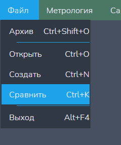
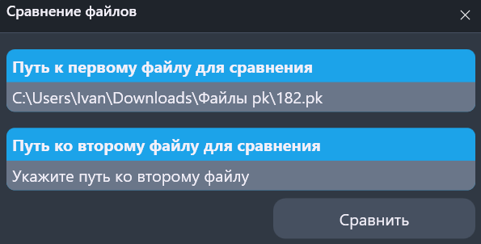
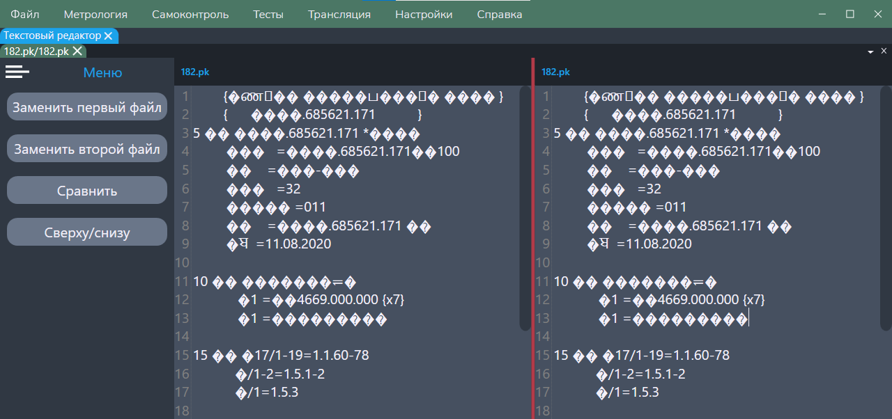
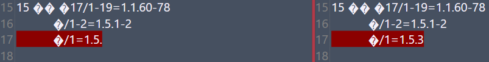

Функция "Сравнить"
Данной функцией можно провести сравнение двух текстовых файлов (расширение *.txt), либо двух файлов программ контроля (расширения: *.pk, *.Pk, *.PK).
ВНИМАНИЕ: при отрытии файлов с разными расширениями обратите свой взор на их кодировки - они должны совпадать для правильного отркытия и сравнения!
Путь и вызов
Нахождение в программе
Верхнее меню → "Файл" → "Сравнить" (показано на рисунке 1)
Горячие клавишы
Ctrl + KНа изображении показано нахождение данной функции в программе:

Действия после нажатия
После нажатия горячих клавиш или ЛКМ по кнопке "Сравнить" открывается окно выбора сравниваемых файлов (рисунок 2), где можно:
- Вписать путь до файла и сам файл с расширнением вручную;
- Нажать два раз ЛКМ по полю ввода для открытия файлового менеджера ОС и выбрать нужный файл.

После выбора нужных файлов откроется меню сравнения файлов (рисунок 3).

Доступный функционал
В данном меню реализован функционал:
- "Заменить первый/второй файл" - возможно заменить файл на другой с помощью файлого менеджера;
-
"Сравнить" - сравнение файлов, с возможным выводом результатов:
- В отсутствии различий появится окно "Отличия не найдены" (рисунок 4);
- При наличии различий в обоих текстовых редакторах будут подчёркнуты все строчки, отличающиеся друг от друга (рисунок 5);
- "Сверху/снизу" или "Слева/справа" - изменение ориентации текстовых редакторов друг относительно друга (в первом случаи - по горизонтали, во-втором - по вертикали)
